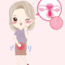

Atrophic Vaginitis
Rx:
1. Vaginal cream Stromarin
۲-۳ هفته اول هرشب و سپس هفته ای ۲ بار استفاده شود
2. Emollient cream (Vagisan)
.
نکته : به بیمار توصیه کنید که کرم استروژن را اطراف مجرای ادرار هم استفاده کند
نکته : از عوارض استروژن ، تندرنس سینه و تیرگی موضع استفاده از کرم هست که موقتی بوده و پس از قطع دارو بهبود می یابد
.
در خانم های منوپوز یا حوالی آن دیده می شود که به علت کاهش استروژن رخ می دهد.
گاها در دوران شیردهی نیز رخ می دهد
علائم :
▪️خشکی واژن
▪️دیسپارونی
▪️خونریزی بعد از نزدیکی
▪️دیزوری
▪️فرکوئنسی
▪️UTI مکرر
▪️بی اختیاری ادرار
1️⃣ واژینیت باکتریال
2️⃣ واژینیت تریکومونایی
3️⃣ واژینیت قارچی
4️⃣ endometritis
5️⃣ vulvovaginal lichen planus
6️⃣ درماتیت تماسی
7️⃣ STD
8️⃣ نئوپلاسم
9️⃣ UTI